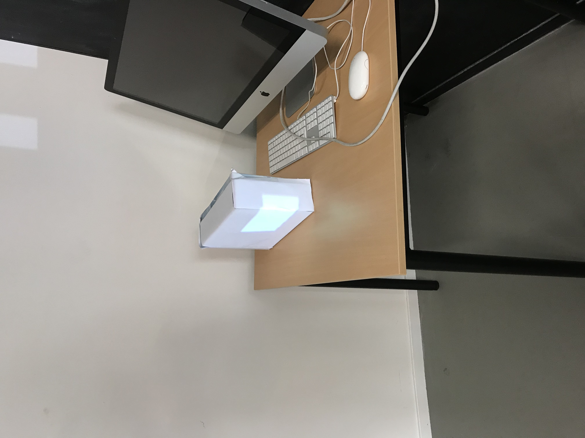

Madmapping wordt uitgevoerd met hun suoftware en een beamer. Bij deze opdracht is het de bedoeling dat een bewegende kubus wordt afgebeeld op een schuin object. Hierbij hebben wij een doos gebruik en deze beplakt met wit papier, zodat de projectie goed zichtbaar is. Het was nog best moeilijk om het vlak op de goeie positie te krijgen. Eerst hebben we op het voorste vlak de kubus afgebeeld en later op het tweede deel door een nieuw vlak toe te voegen. We hebben daarna iets ingesteld, zodat deze twee aparte vlakken één worden en de bewegende kubus op de zijkant van de does afbeeld.